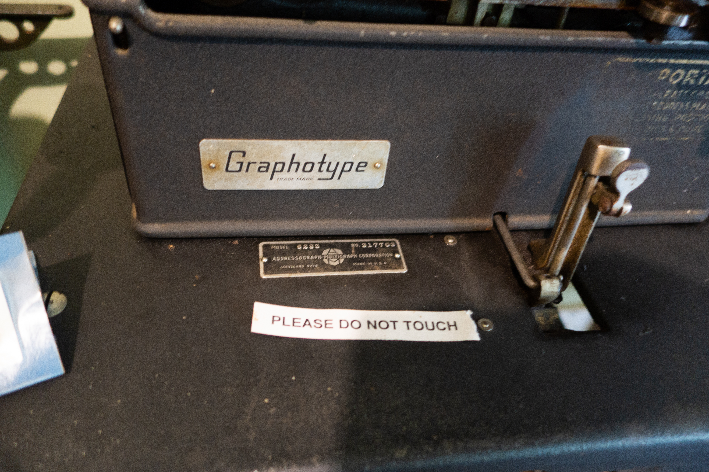

1960s–1980s
Addressograph-Multigraph (AM International after 1979)
Addressograph Cassette Addressing System
The address book was a box of steel plates; a foot pedal swapped each plate like a slide projector
